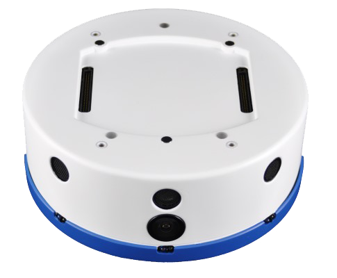
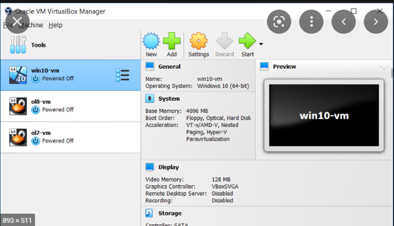
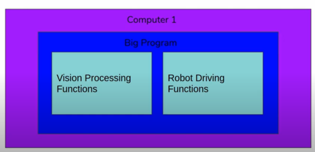

This is one of my starting projects and records all the problems I faced in learning about Robotics. So after completing my first year at Brunel University with a course in Computer Systems Engineering , I was on track and motivated to learn more about 'things' and 'disciplines', now fortunately I got a gig at my university working in association with my module leader for Control Systems , Dr. Nazmul Huda , he provided our team with a Robot called Khephera IV, now this robot looked very small but was very heavy, afte finding that it costed nearly 3500 £ and has attachments like LIDAR sensor and A STARGAZER sensor, I was astonished and excited to work and control it.

So we were a group of three, namely Zohaib Estesham (Our Course Representative, Currently working on Large Hadron Collider's Data that comes in Brunel with CERN), Rishi Dhabhi ( Second Best Student in our class, he and his team created an Loneliness Prediction Algorithm using Pyhton and Jupter that had an accuracy of 65% ) and me Kanishk Mittal ( I have one one achievement as of now , I have scored more than Zohaib and Rishi in the first Year at Brunel University :)> ,
Now this Blog will be like a personal Diary, that will keep records of all the experiences , problems and solutions I found , in my journey to becoming a successful engineer.
So we were supposed to work with Ubuntu, and Minicom, now having no Idea of Hypervisers and virtual machines we thought we will have to buy a Linux based system , but then Dr. Nazmul guided us by acquaiting us to the right software, It is called Virtual Box, on which we can easily intall any Ubuntu or Linux based System for that matter. Now after learning on
how to properly set up Virtual box and Ubuntu espicially for Khephera IV ,
How ?
Ans - Using Yocto, i.e. the YOCTO project is a Linux based Foundation that enables the creation of Linux Distributuins for embedded and IOT Softwares, simply you can create your own application specific operating systems that will be based in Linux , much like making your own mobile phone application, this is one of the reason why Linux is preferred over OS.
Now using this we downloaded the necessary files and started with the project , now we learn How do you approach this type of project as this blog will not only teach you How to do the science , but also on How to approach this projects with very little or no supervision, as autonomous is the a very highly paid and revered trait in any engineer, the drive has to come from within , and the work will come no doubt about that, so after learning a little about Minicom and the basic of terminal emulator programs , I kind - of - made sense of what is Minicom ,
Why Terminal Emulator Program ?
Ans : - I am starting the answer here but will finish it with project , please note and try to keep in mind the points where a normal OS like windows fails and then A terminal emulator comes to the rescue.
1. So Terminal - is part of a certain system esuring its interaction with the external environment, like using a terminal at the airport you can fly from one place to another but only after folloing and obeying certain conditions and arguments same way using your windows terminal will also tasnport data based on parametes and operations.
We need them for several number of reasons, for sending data to a server that is much more powerful than your computer and is located thousand of kilometers away from your computer , and using that computing power you can do a data cleaning operation in a matter of hours rather than a days or even weeks. It can be used for things which you can do otherwise normally on a windows PC, like renaming 50 thousand photos at the same time) , big things we will see as we learn more...
So
Robot Operating System , so I am placing the photos of My copy of User Manual and its description and the computer equivalent execution of those manual pages for better understanding.
What is Ros ?
- It’s a set of libraries, (its not just one library) but a set of libraries, that makes the life of Robot developers very easy.
- Its main focus is providing a messaging system that allows the programs of a robot to be split up in a unique way, and through this standardized message system provide tools and programmes to make program development easier, as you will have to access have to years of community work that has already been done in this domain.
- Code Organization is very important to us , as we have already learnt , now one way to do this is by the way of OOP’s , where the CODE IS ISOLATED AND REUSED, break up large pieces of code and then those pieces communicate with each other.
- ROS does not rely on this and instead relies on software being written as many programs that communicate with each other. In ROS each piece has been converted to a programme and all the programmes talk with each other through ROS.
Why Ros ?
Its like creating an Operating System just like in an operating system different programmes communicate with each other same way ROS helps us develop packages which can communicate with each other, now without it would be a nightmare to create such operating systems.
Very important drawback of conventional OS’s are you are only allowed to work on one system, but with ROS using technologies like Oracle VirtualBox that problem is taken care of.

So what are we doing exactly ?
So here we start with an example of a Robot , and lets say that this Robot can drive around and it can see, now these are really 2 big pieces of the Robot , so you software already has two very big pieces of code , i.e. one piece will take care of Driving and a piece that looking for stuff through the camera
